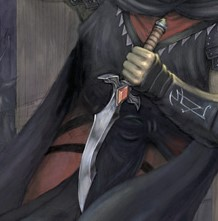

Latent power implanted against will, to exact domination
Tier 1 Directive to killLiving weapons are a finicky tool. Unless utterly broken, which in of itself brings a bit of challenges, they are unreliable. The solution that Lord Ilray discovered, is to break the weakest part of consciousness, splitting the ruins from the still formed being, triggering that state at a directive allowing full control of the weapons actions if required. Although these states are yet imperfect, and utterlu incomprehensive of their actions, and thus utterly non-adaptable. Although this one... might be a breakthrough.Necessary discrepancy advised. This one is the direct form of access to the latent resources of the body, effectively removing inhibitions, both bodily and those of morality. |
|
 Directive 7: AssasinateOnce you fulfil 2 out of 3 requirements you go into this directive. The requirements are see, smell, hear three droplets of halfling blood, dropped in exact 0.5 sec interval. While in this directive you are designated a target. Your movement speed is doubled, you gain 40 temp HP, and you can only use the Assasinate attack. Assasinate Make a melee weapon attack. On hit deals tripe your weapon damage dice, (or 5 times if using a one handed weapon) Critically strikes on rolls of 10 or higher. Afterwards at the end of your turn you can decide to make a saving throw against the users Passive persuasion or passive deception (Their choice). Every save past the first one are made with advantage. |
Directive exhaustionIf you spend a total of one minute in a directive you gain a point of exhaustion |
Directive 9 evade, Directive 3 Capture, Directive 23 Override directives.